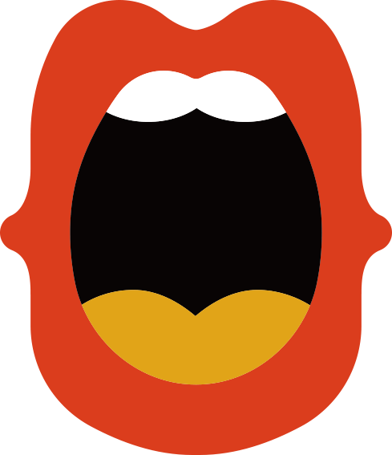

什么是TED和TEDx
TED（指technology, entertainment, design在英语中的缩写，即技术、娱乐、设计）是美国的一家私有非营利机构，该机构以它组织的TED大会著称，这个会议的宗旨是“用思想的力量来改变世界”。 每年3月，TED大会在美国召集众多科学、设计、文学、音乐等领域的杰出人物，分享他们关于技术、社会、人的思考和探索。
TEDX是由TED于2009年推出的一个项目，旨在鼓励各地的TED粉丝自发组织TED风格的活动。截至2010年4月，已经有500多场TEDX在世界各地的城市和乡村举办。
TEDX这种本地化的、自组织的活动可以把人们聚集到一起来分享类似于TED的经历和体验。在TEDx活动中，演讲的视频和现场讲者相结合激发出更深层次的讨论和小组内更紧密的联系。这种当地的、自发性的活动被称为 TEDX，“x”代表了独立组织的TED活动。